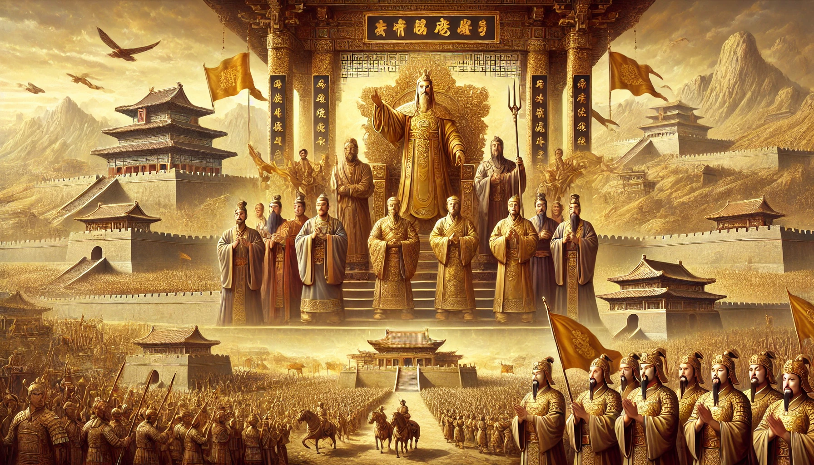
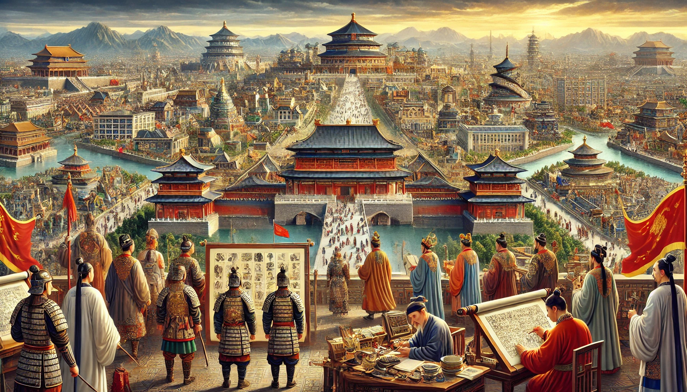
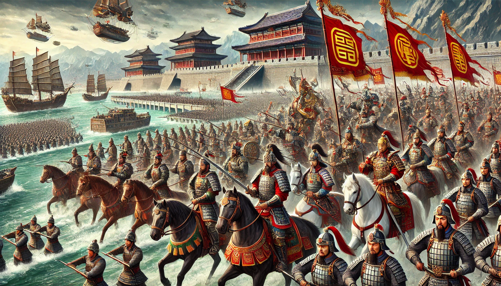
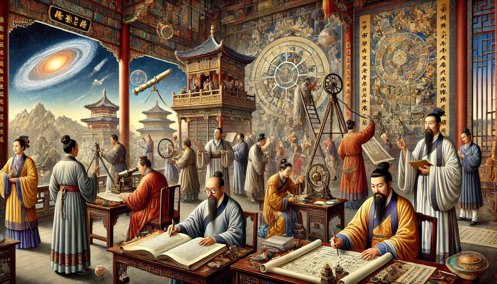
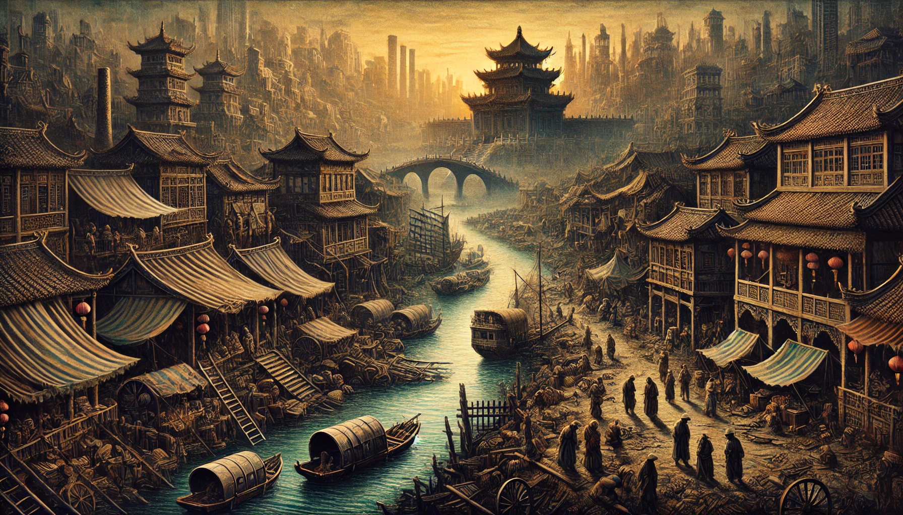

Maqsad
Xitoyning qadimgi davrdan zamonaviy davrgacha bo‘lgan rivojlanish jarayonini o‘rganish va uning yuksalish hamda tanazzul bosqichlarini tahlil qilish.
Xitoy imperiyasining tashkil topishi

Xitoy imperiyasining ilk asoschilari Qin sulolasi bo‘lib, ular miloddan avvalgi 221-yilda Xitoyni birlashtirgan. Qin Shi Huang davlatni markazlashtirib, birinchi imperator deb e’lon qilindi. Bu davrda yozuv, o‘lchov birliklari va yo‘l tizimi standartlashtirildi.
Xitoyning gullab-yashnash davri

Xitoy Tang va Song sulolalari davrida eng katta rivojlanishga erishdi. Bu davrda savdo aloqalari kengayib, Buyuk Ipak yo‘li orqali dunyo bilan bog‘langan. Xitoy ilm-fani, san’ati va texnologiyalari jadal rivojlanib, qog‘oz va bosmaxona kashf etildi.
Xitoy imperiyasining harbiy qudrati

Xitoy imperiyasi o‘zining harbiy kuchi bilan ajralib turgan. Buyuk Xitoy devori mamlakatni bosqinchilardan himoya qilish uchun qurilgan. Ming sulolasi davrida Xitoy kuchli flotga ega bo‘lib, Zheng He boshchiligidagi dengiz ekspeditsiyalari amalga oshirilgan.
Madaniyat va fan rivoji

Xitoy madaniyati Konfutsiy ta’limoti asosida shakllangan. Ushbu davrda falsafa, adabiyot va me’morchilik gullab-yashnadi. Buyuk Xitoy ansambllari, ibodatxonalar va saroylar qurilgan. Shu bilan birga, kompas va porox kabi kashfiyotlar ham amalga oshirilgan.
Imperiyaning iqtisodiy taraqqiyoti

Xitoy qishloq xo‘jaligi, savdo va hunarmandchilik sohalarida katta taraqqiyotga erishdi. Dehqonchilikda sug‘orish tizimlari rivojlantirildi, choy va ipak mahsulotlari jahon bozorida yuqori qadrlangan. Shuningdek, shaharlar rivojlanib, mahalliy va xalqaro bozorlarga ega bo‘lgan.
Tanazzul bosqichlari

Xitoy imperiyasi 19-asrga kelib kuchsizlana boshladi. G‘arb davlatlari bilan olib borilgan urushlar natijasida Xitoy o‘z hududiy mustaqilligini yo‘qota boshladi. Ayniqsa, Afiun urushlari va ichki nizolar imperiyaning zaiflashishiga olib keldi.
Zamonaviy Xitoy
Bugungi kunda Xitoy dunyodagi eng yirik iqtisodiyotlardan biri hisoblanadi. Sanoat va texnologik taraqqiyot orqali mamlakat global maydonda muhim o‘rin egalladi. Xitoyning tarixiy rivojlanishi uning hozirgi mavqeiga katta ta’sir ko‘rsatgan.
Xulosa
Xitoy imperiyasi o‘zining yuksalish va tanazzul bosqichlari orqali dunyo tarixida muhim o‘rin tutadi. Bu davlat qadimiy madaniyat, ilm-fan va iqtisodiyot sohalarida ulkan yutuqlarga erishgan. Uning tarixiy tajribasi bugungi taraqqiyot yo‘lidagi muhim saboqlardan biridir.